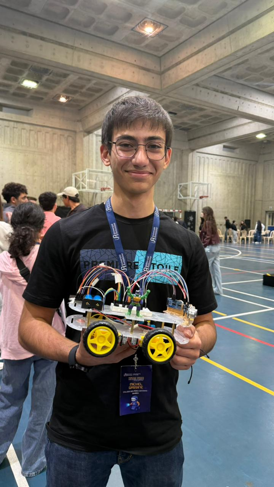

This autonomous mobile robot was engineered for a high stakes competition where scoring was based on the number of obstacles successfully avoided within a 5-minute window.
As a team of three, we collaborated on every stage of development. I took a "full-stack" hardware approach contributing to the mechanical assembly, sensor integration, and the MicroPython logic to ensure I understood how the hardware and software interfaced. We moved away from standard Arduino setups to use the Raspberry Pi Pico, leveraging its dual-core power and MicroPython's rapid prototyping capabilities to fine-tune our avoidance algorithms on the fly.
The control logic operates as a Reactive State Machine using three HC-SR04 sensors to create a "threat map." The firmware polls the Front, Left, and Right sensors sequentially, calculating distances via microsecond pulse timing.
Movement is handled through a pulse-and-pause execution model. The robot moves in discrete 100ms increments, allowing the sensors to clear echoes and avoid interference. The logic follows a hierarchical priority:-Panic Mode: If any sensor detects an object under $6cm$, the robot immediately executes a multi-pulse backward escape.-Decision Logic: If the front path is blocked < 12cm, the robot compares left and right clearings to pick the optimal turn direction.-Lateral Correction: Side sensors < 14cm trigger micro-adjustments to keep the robot centered in corridors.
The primary challenge we encountered was the robot’s inability to stop in time, leading to collisions with obstacles despite successful detection. This was caused by the combination of mechanical inertia and the processing latency of MicroPython when polling three separate ultrasonic sensors. To solve this, we moved away from continuous movement and integrated a custom pulse-pause execution system.
To solve this,we developed on the spot a custom movement pulsing system bearly noticible to the humaneye.We eliminated the momentum that was carrying the robot into its blind zone. This approach ensured that every sensor reading was taken while the robot was perfectly still, providing the stable data necessary to maintain a 6cm "Panic" safety threshold and successfully navigate the competition arena without impact.
This project was a masterclass in system integration and rapid prototyping. As part of a three person team, I contributed to everything from the H-bridge motor wiring to the MicroPython logic.I learned how to manage sensor cross-talk a major hurdle when using three ultrasonic modules. By implementing a sequential polling routine and a "pulse-pause" movement model, we were able to get reliable data even in a crowded arena. This experience taught me that in competitive robotics, a simple, robust state machine often outperforms complex algorithms that can't handle real world noise.